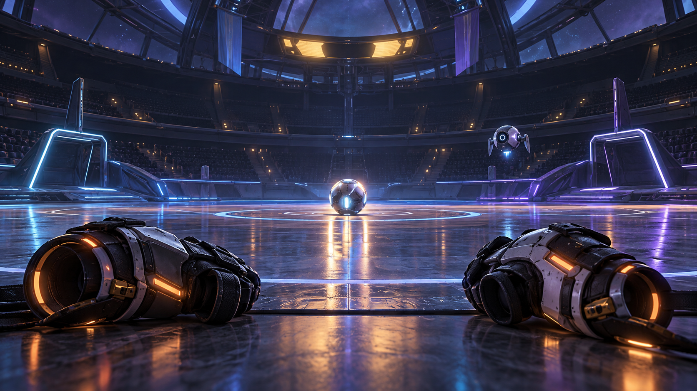

Ultimechs Multiplayer Ends October 20
Ultimechs will lose online multiplayer and leave VR stores on October 20, while its single-player mode remains available to existing owners.

What happened
Resolution Games announced on October 8, 2026 that Ultimechs will end online multiplayer support on October 20. The free-to-play VR arena game will leave the Steam Store that day, and an equivalent developer notice on the Meta Horizon Store confirms the same transition for Quest. Ultimechs Spectator, the separate Steam client built for watching matches, will also be delisted and will no longer be able to spectate games.
The shutdown does not make the entire game unplayable. Resolution Games says people who already have Ultimechs will still be able to enter single-player matches after October 20. In-app purchases have already been disabled, but previously purchased UltiCoins will remain spendable even after multiplayer services end. The studio did not provide a reason for the decision or an exact shutdown time.
Why it matters
Ultimechs launched in September 2022 as a multiplayer-first VR sports game built around one-on-one and two-on-two competition. Its surviving bot matches preserve the basic movement, aiming and scoring systems, but they cannot preserve team coordination, matchmaking or the competitive community that defined the original pitch. The Spectator client losing its only function also closes the practical route for organized match broadcasts.
The notice gives players 12 days between announcement and shutdown. That is a narrow preservation window even for a free game: anyone who wants the remaining single-player version should claim it before delisting, while existing competitors have limited time for final online sessions. The announcement promises continued single-player access, but it does not explain future redownload rules, platform-specific entitlement behavior or long-term compatibility with new headset software.
The Arcade World take
Keeping a functional single-player mode is materially better than turning Ultimechs into an unusable library icon. Resolution Games is preserving its core mechanics and letting purchased currency retain some use. That deserves credit, especially in VR, where a smaller audience can make online populations and server support fragile.
It is still an incomplete preservation outcome. Multiplayer was not a side feature: the official store description sells Ultimechs as a cooperative and competitive sport, and the separate Spectator app existed for creators and tournament organizers. A local network mode, private server package or peer-to-peer option would preserve more of that design, but Resolution Games has announced none of those. Server-cost explanations circulating elsewhere are interpretation, not a confirmed reason from the studio.
What happens next
Before October 20, new players can still add Ultimechs to their Steam or Quest libraries, and current players can use remaining UltiCoins and arrange last multiplayer matches. Because no cutoff time or time zone has been published, waiting until the final day adds unnecessary risk. Players who want the retained version should also install the latest build before service ends rather than assume every storefront will handle later downloads identically.
On October 20, online matchmaking ends, Ultimechs and Ultimechs Spectator leave their stores, and the spectator client stops working. The confirmed post-shutdown product is single-player Ultimechs against bots. Refunds, private servers, LAN play, source-code release and any migration of cosmetics or progression to another game remain unannounced, so they should not be expected without a new statement from Resolution Games.
Sources and further reading
Keep exploring
Open the Game Room or visit the latest stories.